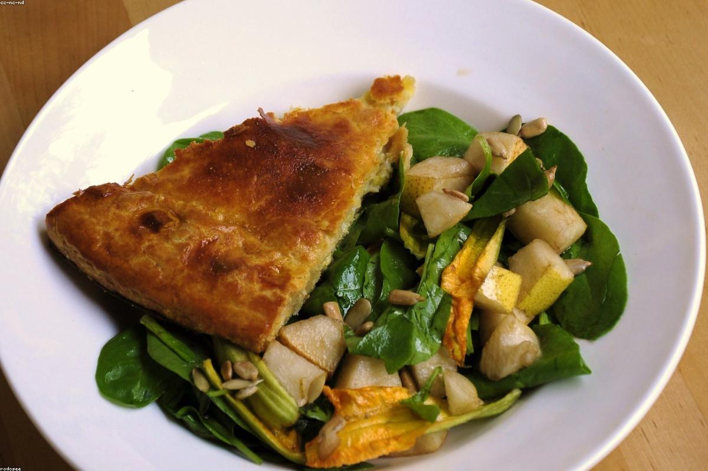
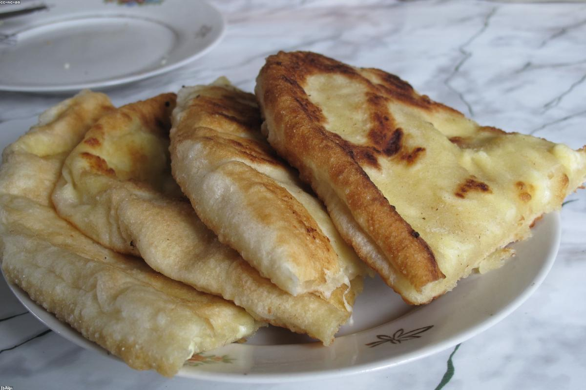

Лодочка хачапури с янтарным желтком, хинкали с бульоном внутри и аромат свежей выпечки — как у бабушки Марико в Кахетии.
«Марико» начался с рецептов из старой тетради — той самой, что бабушка из кахетинской деревни передала внукам вместе с любовью к гостям. Мы перевезли её рецепты на Рождественскую, 39, в самый сердечный квартал Нижнего Новгорода.
Здесь пахнет свежим тестом и углями, на столах — глиняная керамика и орнамент, а в печи всегда румянится новая лодочка хачапури. Мы верим, что грузинский стол — это не про еду, а про тепло, песни и долгие разговоры. Заходите как к себе домой.


«Хачапури по-аджарски — лучшее в городе. Желток, масло, тянущийся сыр — закрываешь глаза и ты в Тбилиси. Вернёмся обязательно!»
«Брали хинкали с бараниной и чакапули. Сочно, ароматно, порции огромные. Уютно, как дома у бабушки. Спасибо команде!»
«Отдельная любовь — интерьер с орнаментом и домашний лимонад тархун. Приятный сервис, разумные цены. Теперь наше любимое место на Рождественской.»
Нижний Новгород, ул. Рождественская, 39 — в самом центре исторического квартала.
Нижний Новгород,
ул. Рождественская, 39
Пн–Чт 11:00–23:00
Пт–Вс 11:00–00:00